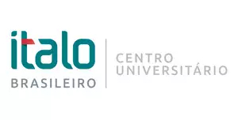
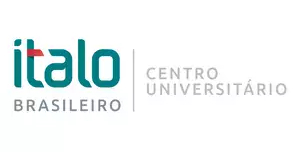

A nossa missão visa garantir o direito a uma educação equitativa e de qualidade desde o jardim-de-infância ao ensino secundário, pós-secundário e superior, tendo em conta que a educação é um dos principais, se não o principal fator, para o desenvolvimento das pessoas e da sociedade.
Desde 2000, houve enorme progresso na promoção do acesso universal à educação primária para as crianças ao redor do mundo. Para além do foco na educação básica, todos os níveis de educação estão contemplados no objetivo de desenvolvimento sustentável 4, que enxerga como fundamental a promoção de uma educação inclusiva, igualitária e baseada nos princípios de direitos humanos e desenvolvimento sustentável. A promoção da capacitação e empoderamento dos indivíduos é o centro deste objetivo, que visa ampliar as oportunidades das pessoas mais vulneráveis no caminho do desenvolvimento.
 
